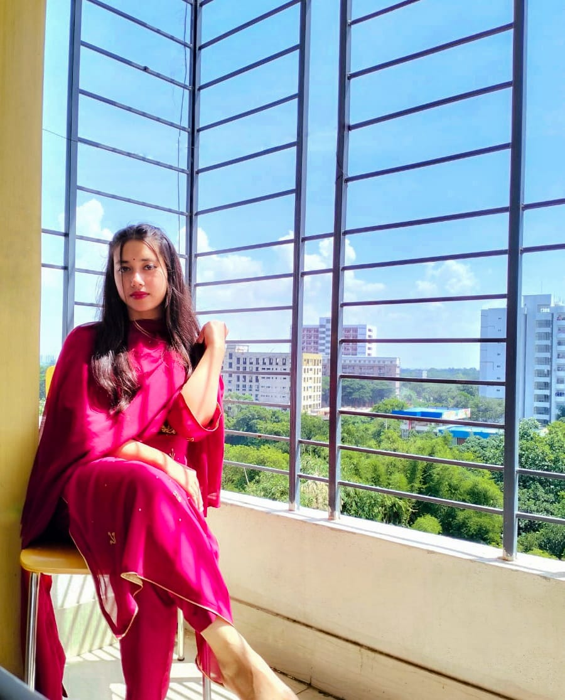

Carriculum Vitae
Tanjila Akter
Student Of Daffodil International University
Address-Savar,Ashulia,Dhaka
Email:akter15-4334@diu.edu.bd
Visit Google Site
Visit Linked In

CAREER OBJECTIVE
Want to become a successful web developer in IT sector with all the effort that can be given.
JOB EXPERIENCE
Worked as a teacher at a coaching center named "study care".
SKILL
- Web developement(html,css)
- C programming(Complete a project with c programming.Project was "Railway Reservation System".Using the feature File,Switch ase. if else, for etc.)
- Java(Object Oriented Languague)(complete another project with that languague named "Online Doctor")
- Google from,google doc file,google site
- Digital Markettor,Team work,Good at presentation,Hard Working.
ACADEMIC QUALIFICATION
Education Qualification
| Degree |
Year |
Institution |
Result |
| B.sc in CSE |
2023 in 5th semester |
Daffodil International University |
3.50 |
| HSC |
2020 |
Sherwood International (pvt) School & College |
5.00 |
| SSC |
2018 |
Sherwood International (pvt) School & College |
5.00 |
| JSC |
2015 |
Sherwood International (pvt) School & College |
5.00 |
EXTRA CURRICULUM ACTIVITIES
- Worked as a volunteer in annual prigramming in motijheel idel collage in 2015.
- Reached to the second round in "DIU READING COMPITITION"in 2018.
- Worked as a volunteer in 2nd ICT carnival in 2019.
- Take partivipation in DIU CSE Inter Department Programming Contest.
- Joined in Volunteer Service Club of Daffodil International University.
LINGUISTIC PROFICIENCY
- English: Efficiency in reading, Writting, speaking and Listening.
- Bangla: Efficiency in reading, Writting, speaking and Listening.
- Hindi: Efficiency in speaking and Listening.
- Tamil: Efficiency in speaking and Listening.
- Germany: Efficiency in speaking and Listening.
PERSONAL INFORMATION
- Father's Name: MD. Golam Mostofa
- Mother's Name: Mst. Sultana Parvin
- Date of Birth: 27-07-2002
- Nationality: Bangladeshi
- Religion: Islam
- Marital Status: Single
- Permanent Address: District-Bogra, Thana-Sherpur
- present Address: Changaon,Ashulia,Savar,Dhaka
INTEREST
- Play with Guiter
- Singing
- Travelling
- Make a good communication with good peoples
- Gardening
REFERENCE
Professor Dr. Touhid Bhuiyan
Head of the Dept. of DIU
Daffodil International International University.
Email:headcse@daffodilvarsity.edu.bd